Note to non-wiki readers: This documentation is generated from the Eclipse wiki - if you have corrections or additions it would be awesome if you added them in the original wiki page .
The GEF4 Geometry component provides classes to store geometric objects and to perform geometric computations based on those objects. It is internally structured into three modules, namely Geometry , Geometry.Convert.FX , and Geometry.Convert.SWT . There are also a couple of undeployed Geometry Examples.
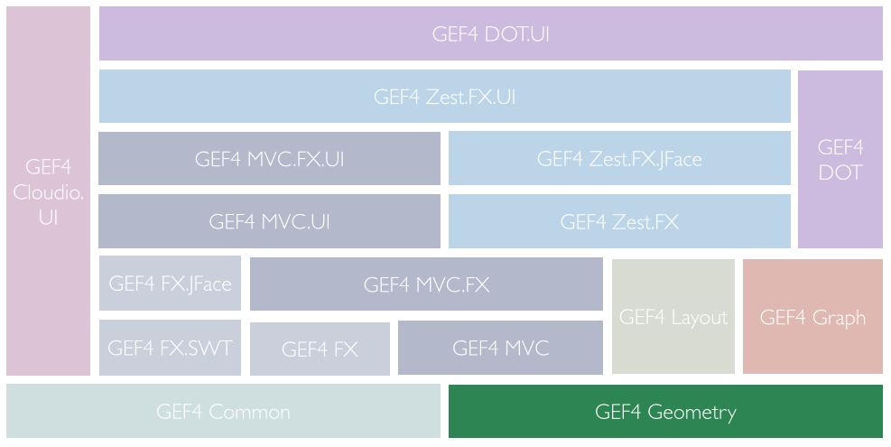
The Geometry module of GEF4 Geometry provides abstractions to support different kinds of geometric calculations within 2-dimensional Euclidean vector space or its related projective space, or based on 2-dimensional planar objects. Furthermore, conversions are supported to import/export from/to related AWT representations.
The API is universally based on double precision calculations. Result values are computed as precise as possible, most of the time. In situations where result values are approximated, the approximation is as precise as required for the related test methods to agree on the values. An imprecision is used in the comparisons of double precision values throughout the implementation. These imprecise comparisons shall ensure consistency with regard to floating point and approximation errors.
To ease navigation, the following sections are organized around the source code packages (org.eclipse.gef4.geomtry.*) of the API, as they were designed to represent the different domains of abstractions.
The Planar package provides basic abstractions for computations based on 2-dimensional geometric objects.
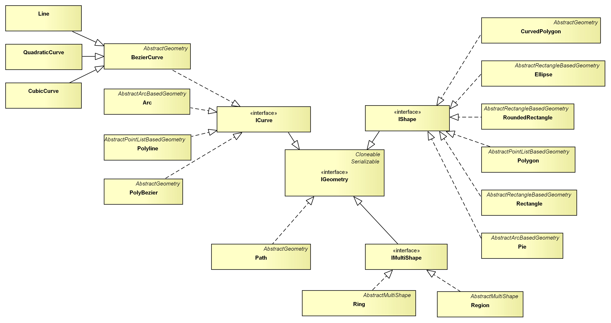
As outlined above, with the exception of the
Path abstraction, all objects are classified into either being curves, shapes, or multi shapes by means of respective interfaces. An ICurve is a one dimensional geometry, i.e. the result that you get by drawing a continuous line with a pencil. It has a start and an end point and you can approximate it by a series of
BezierCurves. An IShape is a two dimensional geometry, i.e. it continuously encloses a region on the drawing area, without holes. An IMultiShape is a (possibly) non-continuous set of IShapes. An example for an IMultiShape is the
Region. A
Region represents the area that results from composing multiple
Rectangles. Accordingly, a
Ring represents the area that results from composing multiple
Polygons. It corresponds to the
org.eclipse.swt.graphics.Region.
The most general type in the hierarchy is the Path, because every geometric object can be transfered into it. Unfortunately, the Path is incompatible to the rest of the API in that it does not implement the different interfaces, it does not ensure a certain precision for the results of its test and manipulation methods, and it cannot be transferred back into compatible objects.
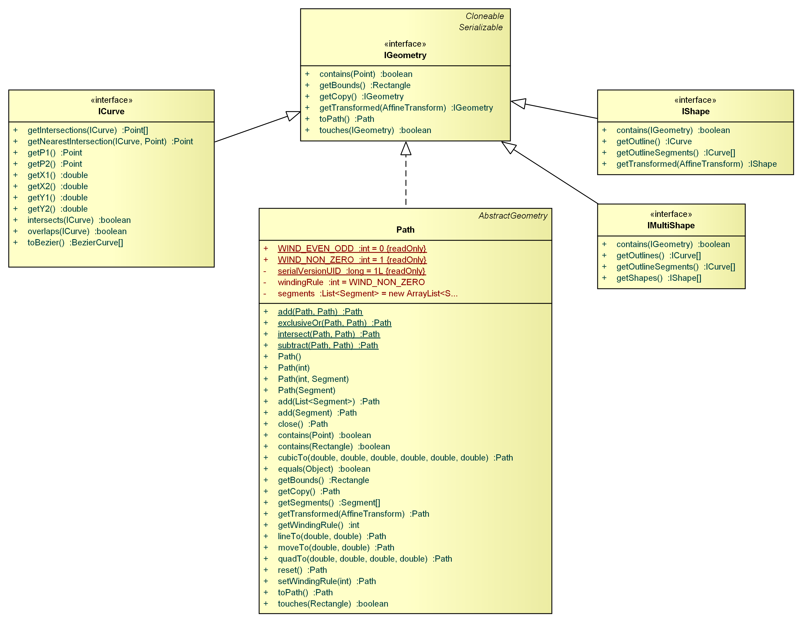
As you can see in this diagram, an ICurve can be approximated by a number of
BezierCurves using the toBezier() method. The outline of an IShape can be retrieved using its getOutline() method. Additionally, you can split an IShape into a number of ICurves -- which form the outline -- using the getOutlineSegments() method. IMultiShape provides a getShapes() method to get the individual IShapes that are combined by the IMultiShape. It does provide a getOutlineSegments() method, too, which is used to split the IMultiShape into several ICurves. These transfer methods allow the decomposition of any geometric object into a bunch of
BezierCurves:
BezierCurve[] fromCurve = curve.toBezier();
BezierCurve[] fromShape = shape.getOutline().toBezier();
ICurve[] fromPolyShape = polyShape.getOutlineSegments();
List<BezierCurve> beziers = new ArrayList<BezierCurve>();
for (ICurve c : fromPolyShape)
beziers.addAll(Arrays.asList(c.toBezier()));
An important part of a geometry API in general, is the possibility to test the relationship of two geometric objects.
GEF4 Geometry provides four methods that perform relation tests. Universally usable is the touches() method, which is supported for each IGeometry. It tests if two objects have at least one point in common. Additionally, ICurves can be tested for points of intersection using the intersects() method and for an overlap using the overlaps() method, among each other. An IShape provides a contains() method to test if it fully contains a given planar object. Moreover, the point test is available for every geometric object. It tests if a given
Point is incidental to the particular object. Supplementary to the intersects() test, a getIntersections() method is offered among ICurves.
BezierCurves do also facilitate the extraction of overlapping segments via the getOverlap() method.
So, let us consider a few examples:
boolean contained = arc.contains(point); boolean contained = pie.contains(point); Point[] intersections = line1.getIntersections(line2); Point[] intersections = line.getIntersections(polygon.getOutline()); Point[] intersections = polygon.getOutline().getIntersections(roundedRectangle.getOutline()); boolean contained = ellipse.contains(line); boolean contained = rectangle.contains(ellipse); boolean contained = region.contains(polygon);
Noticeably, the use of interfaces unifies similar operations on different types. Therefore, the fundamental interfaces (ICurve, IShape, etc.) are complemented by three transformation interfaces: Rotatable, IScalable, and ITranslatable.
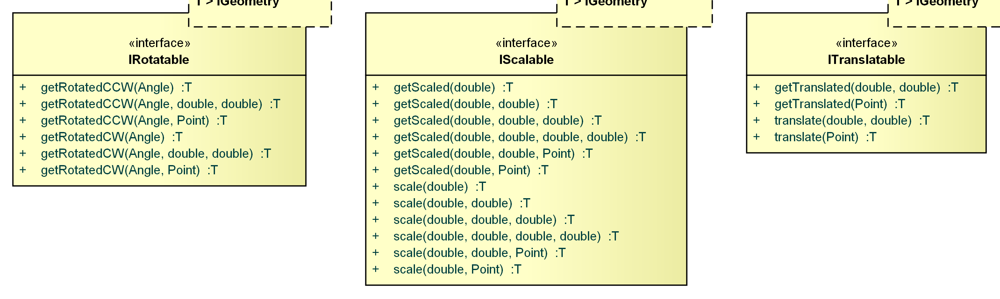
You can either transform your geometric objects via instances of the AffineTransform class, or by using the short-cut methods provided by the Rotatable, IScalable, and ITranslatable interfaces. Transformations can either be directly applied to an object, modifying the object in-place, or to a copy of the original object. This distinction is represented by the names of the short-cut methods. All names starting with 'get' are applied to a copy of the original object. The other methods modify the object in-place.
Translating an object means moving the object. You can move an object in x- and y-direction. Scaling an object means resizing the object. You can individually scale the object in x- and y-direction. Additionally, scaling requires a relative Point to scale to/away from. If you omit this Point, the scaling method will appropriately choose the relative Point. Normally, this will be the center Point of the geometric object that you want to scale. Rotation is special in that not all geometric objects can be rotated in-place. Rectangles, for example, are always parallel to the x- and y-axes. That's why the IRotatable interface does only include the getRotated*() short-cut methods which are not directly applied. However, some geometric objects do provide in-place rotation methods. As with scaling, rotation is performed around a relative Point. If you omit this Point, the rotation method will appropriately choose it. Normally, this will be the center Point of the geometric object that you want to rotate.
Polygon rhomb = new Rectangle(10, 10, 10, 10).getRotatedCCW(Angle.fromDeg(45)); PolyBezier slanted = new Ellipse(100, 100, 100, 50).getRotatedCCW(Angle.fromDeg(30)); Ring rotatedClippingArea = region.getRotatedCCW(Angle.fromDeg(300));
Augmenting the interface hierarchy, all concrete classes are based on abstract geometry classes, depending on the type of geometry used for constructing the objects (i.e.
Ellipse is an AbstractRectangleBasedGeometry, because it is constructed by means of a
Rectangle).
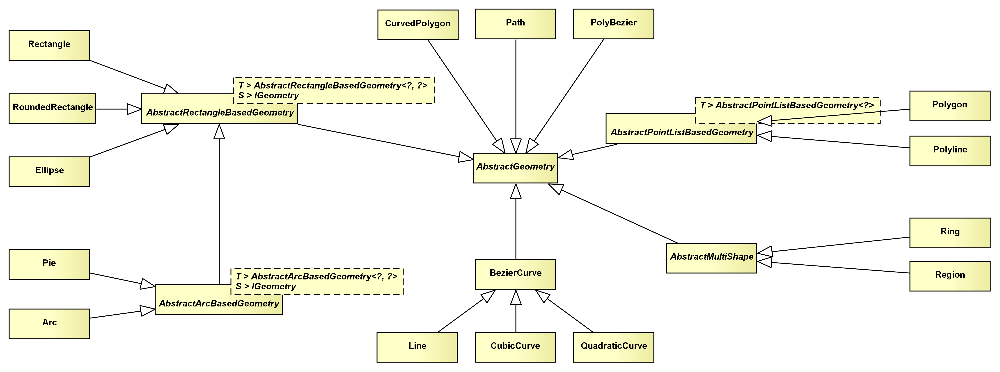
This classification by the construction type of the individual geometry objects allows the generalization of many operations in a few abstract classes. Those abstract classes implement methods that should return an object of the same type as the inheriting class. Thus, type parameters are used to specify such return types.
Point objects represent a point in 2-dimensional space. For the purpose of imagination, you can assume the coordinate system to be originated in the top left corner of your drawing area, expanding to the right and to the bottom. From a list of Point objects, you can build up most of the planar geometric objects:
Point p0 = new Point(); // defaults: x=0, y=0 Point p1 = new Point(5, 0); Point p2 = new Point(0, 5); Polygon triangle = new Polygon(p0, p1, p2);
Additionally, the Point class provides static utility methods to operate on a list of Points: getBounds(Point...), getCentroid(Point...), and getConvexHull(Point...). They construct a bounding box, the centroid, and a convex hull of the given Point list, respectively.
Polygon convexHull = Point.getConvexHull(points);
The Dimension class is the pendant of the org.eclipse.draw2d.geometry.Dimension class. It decouples the location and the width and height of a rectangular object.
Rectangle bounds = new Rectangle(
new Point(50, 50),
new Dimension(80, 20)
);
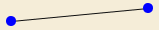
A Line is the straight connection of two
Points:
Line line = new Line(p0, p1)
As it inherits from the
BezierCurve class, all the operations for
BezierCurves are available for Line objects, too. Because of its frequent use, Line overrides many of those operations to provide faster implementations for the Line/Line and Line/
Point cases (equals(), touches(), contains(), intersects(), overlaps(), getIntersections(), and many more). If you want to display a Line using SWT, you can use the Geometry2SWT.toSWTPointArray() method as follows:
gc.drawPolyline(Geometry2SWT.toSWTPointArray(line));
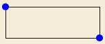
A Rectangle is the axes-parallel rectangle defined by a location (x- and y-coordinates) and a
Dimension (width and height):
Rectangle rect = new Rectangle(x, y, w, h);
Rotating a Rectangle results in a
Polygon:
Polygon slanted = rect.getRotatedCCW(Angle.fromDeg(30));
Rectangle objects are frequently used, that's why some operations are overridden to provide faster implementations for designated parameter types (equals(), contains(), touches()). If you want to display a Rectangle using SWT, you can use the Geometry2SWT.toSWTRectangle() method as follows:
gc.drawRectangle(Geometry2SWT.toSWTRectangle(rect));
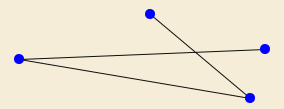
A Polyline combines multiple
Line segments to address them as a whole. Consecutive
Line segments of a Polyline share at least one end
Point. The outline of some of the IShape implementations can be represented by a Polyline (
Rectangle and
Polygon):
Polyline polyLine = new Polyline(new Line(p0, p1), new Line(p1, p2)); Polyline outline = Polygon.getOutline();
To render a Polyline with SWT, you can use the Geometry2SWT.toSWTPointArray() method as follows:
gc.drawPolyline(Geometry2SWT.toSWTPointArray(polyline));
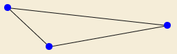
A Polygon represents a simple polygon, i.e one that does not have intersecting sides:
Polygon rhomb = new Polygon(0, 0, 1, -1, 2, 0, 1, 1);
If you need to process self-intersecting polygons, you can use the Ring instead.
A Polygon can be rendered with SWT using the Geometry2SWT.toSWTPointArray() method as follows:
gc.drawPolyline(Geometry2SWT.toSWTPointArray(polygon));
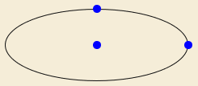
An Ellipse is the axes-symmetric oval that can be put into an axes-parallel
Rectangle:
Ellipse ellipse = new Ellipse(rect);
Therefore, rotating an Ellipse does not result in another Ellipse, but in a
PolyBezier which approximates the rotated Ellipse:
PolyBezier rotatedEllipse = ellipse.getRotatedCCW(Angle.fromDeg(45));
You can always transfrom a
PolyBezier into an Ellipse by using the
PolyBezier's bounds as the Ellipse's bounds:
Ellipse rotated = new Ellipse(rotatedEllipse.getBounds());
If you want to draw an Ellipse using SWT, you can directly use the GC's drawOval() method as follows:
gc.drawOval((int) ellipse.getX(), (int) ellipse.getY(), (int) ellipse.getWidth(), (int) ellipse.getHeight());
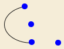
An Arc is an open segment of an
Ellipse:
Arc arc = new Arc(ellipse, Angle.fromDeg(45), Angle.fromDeg(90));
Rotating an Arc does not necessarily result in another Arc, that's why the rotation methods return
PolyBeziers instead:
PolyBezier polyBezier = arc.getRotatedCCW(Angle.fromDeg(15), new Point());
Unfortunately, it is impossible to transfrom a
PolyBezier into an Arc.
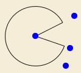
A Pie is a closed
Arc. Closing the
Arc is done by creating two segments: one from the mid
Point of the related
Ellipse to the start
Point of the related
Arc, the other from the mid
Point of the
Ellipse to the end
Point of the
Arc.
Pie pie = new Pie(arc);
Rotating a Pie results in a
Path, which, unfortunately, cannot be transformed back into a Pie:
Path rotatedPie = pie.getRotatedCCW(Angle.fromDeg(15), new Point());#
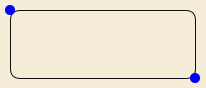
A RoundedRectangle is a rectangle with round corners. The corners are 90 degrees
Arc objects:
RoundedRectangle rr = new RoundedRectangle(bounds, arcWidth, arcHeight);
Rotating a RoundedRectangle does not result in another RoundedRectangle, but rather in a
PolyBezier describing the rotated outline:
PolyBezier rotated = rr.getRotatedCCW();
Unfortunately, it is impossible to transform a
PolyBezier into a RoundedRectangle.
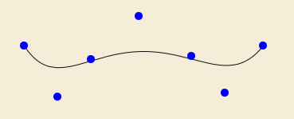
A BezierCurve is constructed by a number of control
Points: the start
Point, an arbitrary number of handle
Points, and the end
Point. The curve approaches the handle
Points. Therefore, the handle
Points describe the flow of the curve. The more handle
Points used, the more converges the BezierCurve to the
Polyline through the control
Points:
BezierCurve curve = new BezierCurve(pStart, pHandle0, pHandle1, pHandle2, ..., pEnd);
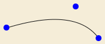
A QuadraticCurve is a
BezierCurve with three control
Points: the start
Point, one handle
Point, and the end
Point.
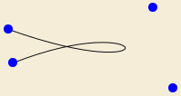
A CubicCurve is a
BezierCurve with four control
Points: the start
Point, two handle
Points, and the end
Point. Many geometry objects approximate their round outline segments using a number of CubicCurves (
Ellipse,
Arc,
Pie, and
RoundedRectangle).
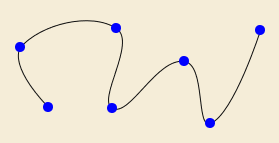
A PolyBezier combines multiple
BezierCurve segments to address them as a whole:
PolyBezier polyBezier = new PolyBezier(line, quadCurve, cubicCurve, arbitraryBezierCurve);
Consecutive
BezierCurves are connected with each other, i.e. the end
Point of one
BezierCurve is the start
Point of the subsequent
BezierCurve. The outline of several IShape implementations can be represented by a PolyBezier (
Ellipse,
Pie, and
RoundedRectangle):
PolyBezier outline = pie.getOutline();
Besides, the PolyBezier class provides a method to interpolate a number of
CubicCurves through a set of
Points:
PolyBezier interpolation = PolyBezier.interpolateCubic(p0, p1, p2, p3, ...);
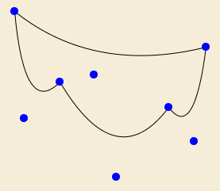
A CurvedPolygon is composed by a number of BezierCurves where two subsequent BezierCurves have to share one end Point. Moreover, a CurvedPolygon is always closed, so the end Point of the last BezierCurve has to be equal to the start Point of the first BezierCurve.
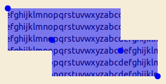
A Region is built up of multiple
Rectangles to address their enclosing area as a unit. The
Rectangles that build up the Region do not have to touch each other. If they intersect, the
Rectangles are divided into a number of internal
Rectangles that do not intersect:
Region region = new Region(rect0, rect1, rect2);
You can use a Region as a clipping area as in the example image above. For this purpose, it can be transfered into a SWT
org.eclipse.swt.graphics.Region using the Geometry2SWT.toSWTRegion() method as follows:
gc.setClipping(Geometry2SWT.toSWTRegion(region));
Rotating a Region results in a
Ring:
Ring rotatedRegion = region.getRotatedCCW(Angle.fromDeg(45));
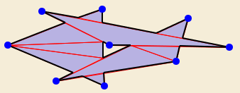
A Ring is build up of multiple
Polygons to address their enclosing area as a unit. The
Polygons that build up the Ring do not have to touch each other. They are transfered into an internal number of triangles that do not intersect:
Ring ring = new Ring(poly0, poly1, poly2);
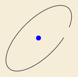
Using a Path is like drawing the joker. You can transfer every other geometric object into a Path using the toPath() method. But the Path does not implement the
GEF4 Geometry interfaces. It simply delegates to the java.awt.geom.Path2D. That's why you should try to avoid using the Path if you want to perform further computations. On the other hand, a Path is easy to render via SWT:
gc.drawPath(new org.eclipse.swt.graphics.Path(Display.getCurrent(), Geometry2SWT.toSWTPathData(gef4Path)); gc.fillPath(new org.eclipse.swt.graphics.Path(Display.getCurrent(), Geometry2SWT.toSWTPathData(gef4Path));
The Euclidean package provides core abstractions ( Vector, Straight, and Angle) to support calculations within 2-dimensional Euclidean space.
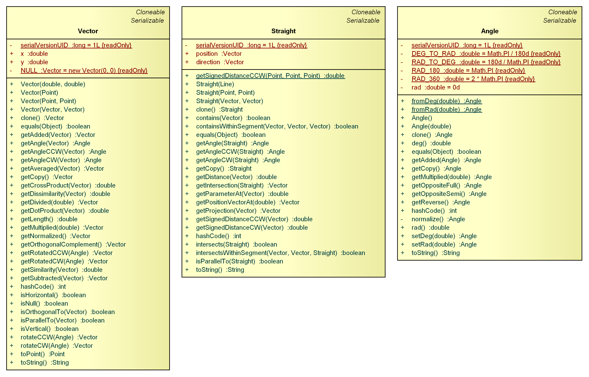
Considering rotation and the angular relationship of two straight lines, Angle objects come into play. They abstract over the two commonly used angle units, degrees and radians. The user has to specify the unit of the value an Angle object is constructed from. Moreover, the user can read the value of an Angle object in either degrees or radians. Therefore, the use of Angle objects assures that correct values are used in calculations. This indirection is done due to an inconsistency of several APIs, for example, org.eclipse.swt.graphics.Transform vs. org.eclipse.draw2d.geometry.Transform.
// creates a 75% pie chart Pie chart = new Pie(0, 0, 100, 100, Angle.fromDeg(15), Angle.fromDeg(270));
A Vector has two components x and y. It can be interpreted as a planar
Point (toPoint()). The Vector class implements the common arithmetic operations for vectors: addition, multiplication with a scalar, dot product, cross product, and
Angle calculation between two Vectors:
Vector u = new Vector(1, 0); Vector v = new Vector(0, 1); double zero = u.getDotProduct(v);
A Straight is an infinite planar line. You can build it up from either two
Points which the Straight passes through, or by specifying a position and a direction
Vector:
Straight diagonal = new Straight(new Point(1, 1), new Point(2, 2)); Straight diagonal = new Straight(new Vector(1, 1), new Vector(1, 1)); // exactly the same Straight
The Projective package provides classes ( Vector3D, Straight3D) to represent euclidean elements in the projective plane.
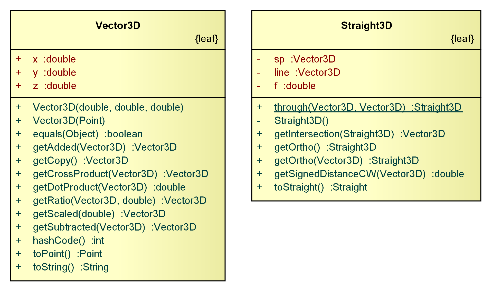
Projective geometry is an interesting perspective to (planar) geometry. A point and a line can both be represented by a (x, y, z) triple. And, in fact, people speak of the duality between points and lines, because for any relation between points and lines, the inverse relation holds if you substitute point by line and vice versa. To retain the semantic distinction of points and lines, both concepts are separated in the Vector3D and Straight3D classes. You may wonder why 2-dimensional objects are specified by three components. This is the case, because a planar projective point is really a three dimensional euclidean line, that passes through the origin of the three dimensional coordinate system. The x, y, and z values are the components of the direction vector of that line. Similarly, a planar projective line is really a three dimensional euclidean plane, that contains the origin of the three dimensional coordinate system. The x, y, and z components specify that plane's normal vector. Notice that the z = 1 plane is considered to be the 2-dimensional plane. Therefore, a Vector3D with the components (x, y, z) represents a Point with components (x/z, y/z).
This approach leads to elegant mathematical solutions to some of the basic planar geometric operations. You want to know if a point lies on a line? Simply substitute its coordinate values into the Straight3D's formula. You want to know the distance of a point to a line? If the Straight3D's vector is normalized (a^2 + b^2 = 1), the formula evaluates to the signed distance of the point to the line, i.e. on one side of the line it is positive and on the other side it is negative. You want to know where two lines are intersecting? Simply compute the cross product of two (x, y, z) triples. These operations are packed in appropriately named methods.
Straight3D s = Straight3D.through(new Vector3D(s0), new Vector3D(s1)); // s0, s1 are Points double signedDistance = s.getSignedDistanceCW(p); // Math.abs() => absolute distance Straight3D r = Straight3D.through(new Vector3D(r0), new Vector3D(r1)); // r0, r1 are Points Vector3D intersection = s.getIntersection(r); Point poi = intersection.toPoint();
A Vector3D consists of three components (x, y, z). It represents the
Point (x/z, y/z) in 2-dimensional space. You can use the common arithmetic operations for vectors on a Vector3D object:
Vector3D v = new Vector3D(1, 2, 3); Vector3D u = v.getAdded(new Vector3D(3, -6, 1)); double zero = v.getDotProduct(u);
A Straight3D consists of three components (x, y, z). It represents the line ax + by + z = 0 in 2-dimensional space, where (a, b) is a planar
Point. You can use a Straight3D to calculate the distance of a
Vector3D to the Straight3D. Moreover, you can compute the point of intersection of two Straight3Ds:
Straight3D s = Straight3D.through(new Vector3D(1, 1, 1), new Vector3D(2, 1, 1)); double one = s.getSignedDistanceCW(new Vector3D(1.5, 2, 1));
The Convert.AWT package contains helper classes to transfer data from AWT/Geometry to one another.
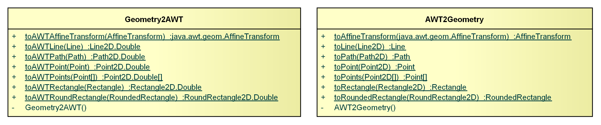
Point, Line, Rectangle, RoundedRectangle, and AffineTransform objects can be transfered into their AWT pendants using the toAWT*() methods of the Geometry2AWT class:
RoundRectangle2D rr2d = Geometry2AWT.toAWTRoundedRectangle(rr);
Correspondingly, the AWT2Geometry class provides methods to transfer AWT objects into GEF 4 Geometry objects:
RoundedRectangle rr = AWT2Geometry.toRoundedRectangle(rr2d);
The Geometry.Convert.FX module of GEF4 Geometry contains helper classes for the conversion of JavaFX/Geometry objects to one another.
The Convert.FX package contains helper classes to transfer data from JavaFX/Geometry to one another.
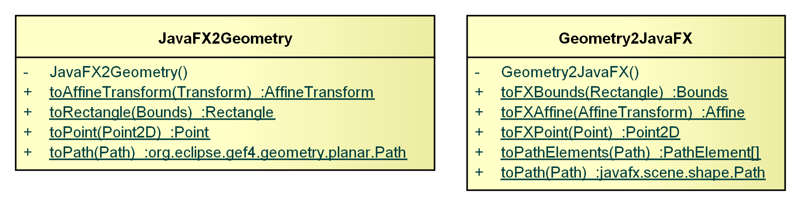
AffineTransform, Path, Point, and Rectangle objects can be transfered into their JavaFX pendants using the toFX*() methods provided by the Geometry2JavaFX class:
Rectangle rect = new Rectangle(10, 10, 100, 50); javafx.geometry.Bounds rectFx = Geometry2JavaFX.toFXBounds(rect);
Additionally, the #toPathElements(Path) method allows the conversion of a Path object into JavaFX PathElements.
JavaFX Bounds, Transform, Path, and Point2D can be transfered into their Geometry pendants using the to*() methods provided by the JavaFX2Geometry class.
The Geometry.Convert.SWT module of GEF4 Geometry contains helper classes for the conversion of SWT/Geometry objects to one another and SWT/AWT objects to one another.
The Convert.SWT package contains helper classes to transfer data from SWT/Geometry to one another and from SWT/AWT to one another.
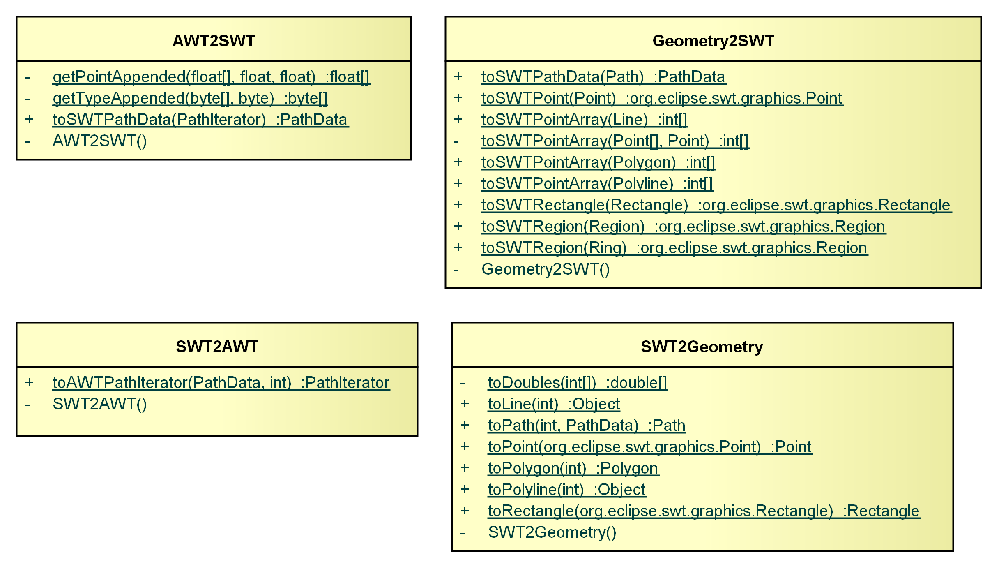
Path,
Point,
Line,
Polygon,
Polyline,
Rectangle,
Region, and
Ring objects can be transfered into their SWT pendants using the toSWT*() methods provided by the Geometry2SWT class:
Rectangle rect = new Rectangle(10, 10, 100, 50); org.eclipse.swt.graphics.Rectangle rectSWT = Geometry2SWT.toSWTRectangle(rect);
Using the IGeometry#toPath() method, you can easily convert any GEF4 Geometry object into an SWT PathData representation:
CubicCurve curve = new CubicCurve(0, 0, 50, 0, 0, 50, 50, 50); PathData pd = Geometry2SWT.toSWTPathData(curve.toPath());
The SWT2Geometry class contains methods to transfer SWT objects into
GEF4 Geometry representations.
The SWT2AWT class contains a toPathIterator() method which transfers an SWT PathData into a
java.awt.geom.PathIterator.
PathIterator pathIterator = SWT2AWT.toPathIterator(pathData, windingRule);
The AWT2SWT class contains a toSWTPathData() method which transfers an
java.awt.geom.PathIterator into an org.eclipse.swt.graphics.PathData. Consider that the winding rule of the AWT PathIterator is not kept in the SWT PathData, because the latter does not store this information. Instead, it is provided by an SWT Path or by the SWT GC that is used to draw the SWT PathData object:
PathData pathData = AWT2SWT.toSWTPathData(pathIterator);